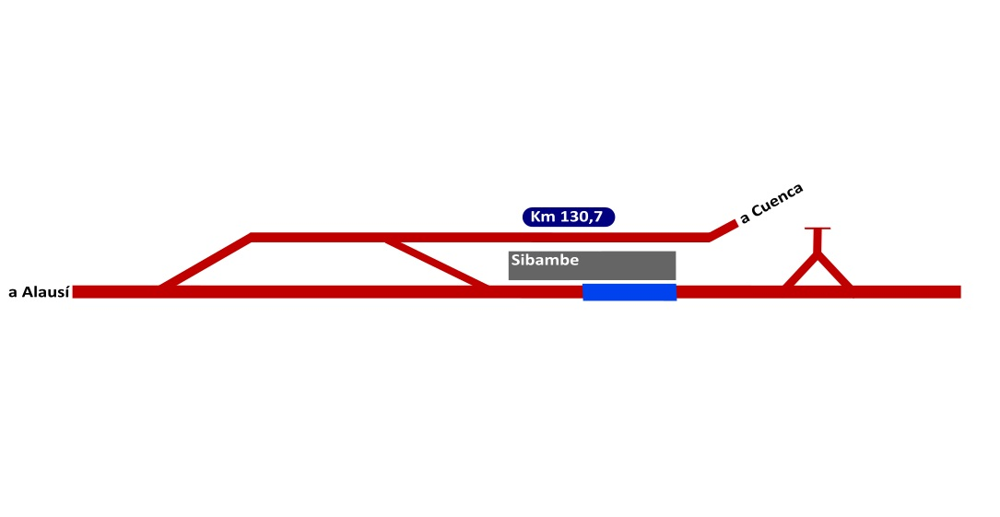
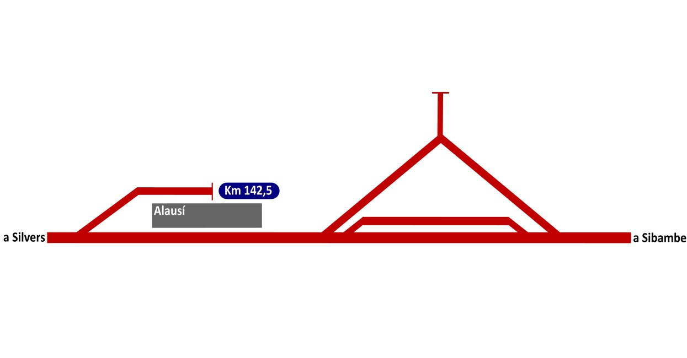

Tramo Sur: Durán (PK 0,0) — Riobamba (PK 230,5)
Listado de estaciones de la filial litoral.
-Se ha tomado como referencia el informe "Perfil y cartacterísticas línea férrea Guayaquil-Quito" de la FEEP de 2014.
-Es posible que estaciones anteriores u originales de la línea no aparezcan.
-Algunas estaciones han desaparecido pero los desvíos o triángulos ferroviarios pueden ser utilizados tras renovación, en ese caso aprecerán también marcados.
| PK | Estación / Dependencia | Foto 1 | Foto 2 | Altitud | Tipo de Instalación | Estado | Equipamiento y Servicios |
|---|---|---|---|---|---|---|---|
| PK 0,0 | Durán (Eloy Alfaro) |  |
 |
4 m.s.n.m. | Estación Terminal / Talleres | Fuera de servicio | Talleres generales, depósito de locomotoras, placa giratoria. |
| PK 11,7 | Casiguaña | |
|
4 m.s.n.m. | - | Ya no existe | - |
| PK 21,2 | Yaguachi | |
|
5 m.s.n.m. | Estación | Fuera de servicio | Triángulo ferroviario. |
| PK 33,6 | Valdez | |
|
9 m.s.n.m. | Estación | Fuera de servicio | - |
| PK 34,4 | Milagro | |
|
12 m.s.n.m. | Estación | Fuera de servicio | - |
| PK 43,8 | Venecia | |
|
19 m.s.n.m. | - | Ya no existe | - |
| PK 50,5 | Naranjito | |
|
31 m.s.n.m. | Estación | Fuera de servicio | - |
| PK 59,9 | San Antonio | |
|
53 m.s.n.m. | - | Ya no existe | - |
| PK 69,1 | Barraganetal | |
|
93 m.s.n.m. | Estación | Fuera de servicio | - |
| PK 72,1 | Paquita | |
|
116 m.s.n.m. | - | Ya no existe | - |
| PK 76,3 | San Rafael | |
|
161 m.s.n.m. | - | Ya no existe | - |
| PK 81,6 | Lolita | |
|
213 m.s.n.m. | - | Ya no existe | - |
| PK 87,4 | Bucay | |
|
294 m.s.n.m. | Estación y talleres | Fuera de servicio | Talleres. Triángulo ferroviario. |
| PK 93,7 | Ventura | |
|
397 m.s.n.m. | Apeadero | Fuera de servicio | - |
| PK 99,6 | Naranjapada | |
|
555 m.s.n.m. | - | Ya no existe | - |
| PK 107 | Olimpo | |
|
826 m.s.n.m. | - | Ya no existe | - |
| PK 116,1 | Huigra | |
|
1.255 m.s.n.m. | Estación | Fuera de servicio | Triángulo ferroviario. |
| PK 121,6 | Chanchán | |
|
1.482 m.s.n.m. | - | Ya no existe | - |
| PK 126,8 | Boliche | |
|
1.692 m.s.n.m. | - | Ya no existe | - |
| PK 130,7 | Sibambe | |
 |
1.836 m.s.n.m. | Estación / Estación terminal | En servicio | Triángulo ferroviario. PK 0,0 FFCC Sibambe a Cuenca. |
| PK 138,1 | Caída | |
|
2.142 m.s.n.m. | - | Ya no existe | - |
| PK 142,5 | Alausí | |
 |
2.347 m.s.n.m. | Estación | En servicio | Triángulo ferroviario. |
| PK 148 | Silvers | |
|
2.634 m.s.n.m. | Estación | Fuera de servicio | - |
| PK 152,7 | Tixán | |
|
2.786 m.s.n.m. | Estación | Fuera de servicio | - |
| PK 154,5 | Carolina | |
|
2.858 m.s.n.m. | Estación | Fuera de servicio | - |
| PK 158,1 | Castillo | |
|
2.993 m.s.n.m. | Estación | Fuera de servicio | - |
| PK 166 | Palmira | |
|
3.239 m.s.n.m. | Estación | Fuera de servicio | - |
| PK 171,8 | Velez | |
|
3.172 m.s.n.m. | - | Ya no existe | - |
| PK 181,5 | Guamote | |
|
3.057 m.s.n.m. | Estación | Fuera de servicio | Triángulo ferroviario. |
| PK 187,4 | Columbe | |
|
3.126 m.s.n.m. | - | Ya no existe | - |
| PK 194,1 | Mancheno | |
|
3.202 m.s.n.m. | - | Ya no existe | - |
| PK 205,6 | Colta | |
|
3.296 m.s.n.m. | Estación | Fuera de servicio | - |
| PK 211,8 | Cajabamba | |
|
3.212 m.s.n.m. | Estación | Fuera de servicio | - |
| PK 217,7 | San Juan | |
|
3.016 m.s.n.m. | - | Ya no existe | - |
| PK 223,4 | Sillaguan | |
|
2.930 m.s.n.m. | - | Ya no existe | - |
| PK 230,5 | Riobamba |  |
 |
2.764 m.s.n.m. | Estación | Fuera de servicio | Talleres generales, depósito de locomotoras y óvalo giratorio. |
| PK 239,3 | Uchanchi | |
|
2.995 m.s.n.m. | Estación | Ya no existe | - |
| PK 244 | Luisa | |
|
3.171 m.s.n.m. | Estación | Ya no existe | - |
| PK 252,4 | Siberia | |
|
3.351 m.s.n.m. | Estación | Ya no existe | - |
| PK 261,8 | Urbina | |
|
3.609 m.s.n.m. | Estación | Fuera de servicio | Triángulo ferroviario |
| PK 271,6 | Mocha Pata | |
|
3.349 m.s.n.m. | Estación | Ya no existe | - |
| PK 275,6 | Mocha | |
|
3.187 m.s.n.m. | Estación | Fuera de servicio | - |
| PK 287,3 | Cevallos | |
|
2.882 m.s.n.m. | Estación | Fuera de servicio | - |
| PK 291,6 | Montalvo | |
|
2.842 m.s.n.m. | Estación | Ya no existe | - |
| PK 304,9 | Ambato | |
|
2.570 m.s.n.m. | Estación | Fuera de servicio | - |
| PK 315,2 | Puerto Arturo | |
|
2.668 m.s.n.m. | Estación | Ya no existe | - |
| PK 325,7 | Cunchibamba | |
|
2.668 m.s.n.m. | Estación | Ya no existe | - |
| PK 335,6 | Salcedo | |
|
2.636 m.s.n.m. | Estación | Fuera de servicio | - |
| PK 348,9 | Latacunga | |
|
2.760 m.s.n.m. | Estación | Fuera de servicio | Triángulo ferroviario. |
| PK 360,6 | Guaytacama | |
|
2.882 m.s.n.m. | Estación | Fuera de servicio | - |
| PK 369 | Lasso | |
|
2.995 m.s.n.m. | Estación | Fuera de servicio | - |
| PK 374,3 | Chasqui | |
|
3.084 m.s.n.m. | Estación | Ya no existe | Triángulo ferroviario. |
| PK 380,4 | Daule | |
|
3.277 m.s.n.m. | Estación | Ya no existe | - |
| PK 388,1 | El Boliche | |
|
3.547 m.s.n.m. | Estación | Fuera de servicio | Ex Cotopaxi. Triángulo ferroviario. |
| PK 399,1 | Chisinche | |
|
3.259 m.s.n.m. | Estación | Ya no existe | - |
| PK 406,9 | Machachi | |
|
3.089 m.s.n.m. | Estación | Fuera de servicio | - |
| PK 413,2 | Alóag | |
|
2.949 m.s.n.m. | Estación | Fuera de servicio | - |
| PK 423 | Tambillo | |
|
2.779 m.s.n.m. | Estación | Fuera de servicio | Triángulo ferroviario. |
| PK 432,9 | Santa Rosa | |
|
3.013 m.s.n.m. | Estación | Fuera de servicio | - |
| PK 446,8 | Quito-Chimbacalle | |
|
2.777 m.s.n.m. | Estación | Fuera de servicio | Estación terminal. |